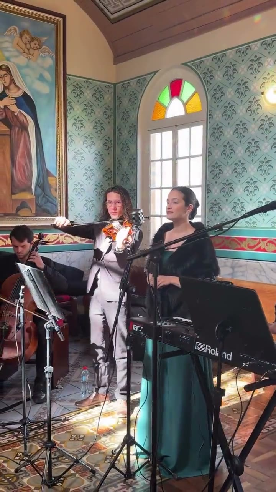
Marcha + Jesus Meu Esposo
Entrada da noiva · conjunto com cordas
Este link não está ativo no momento. Me chama no WhatsApp que eu envio a proposta atualizada para vocês.
Falar com a Jamilli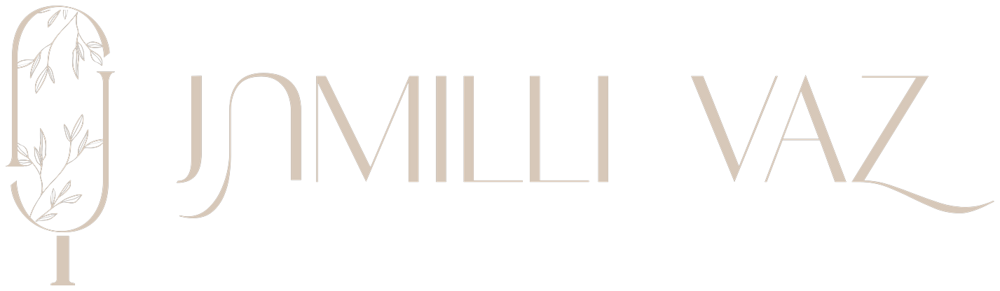
Proposta musicalProposta preparada para
Role para conhecerUm recado para vocês
Jamilli Vaz
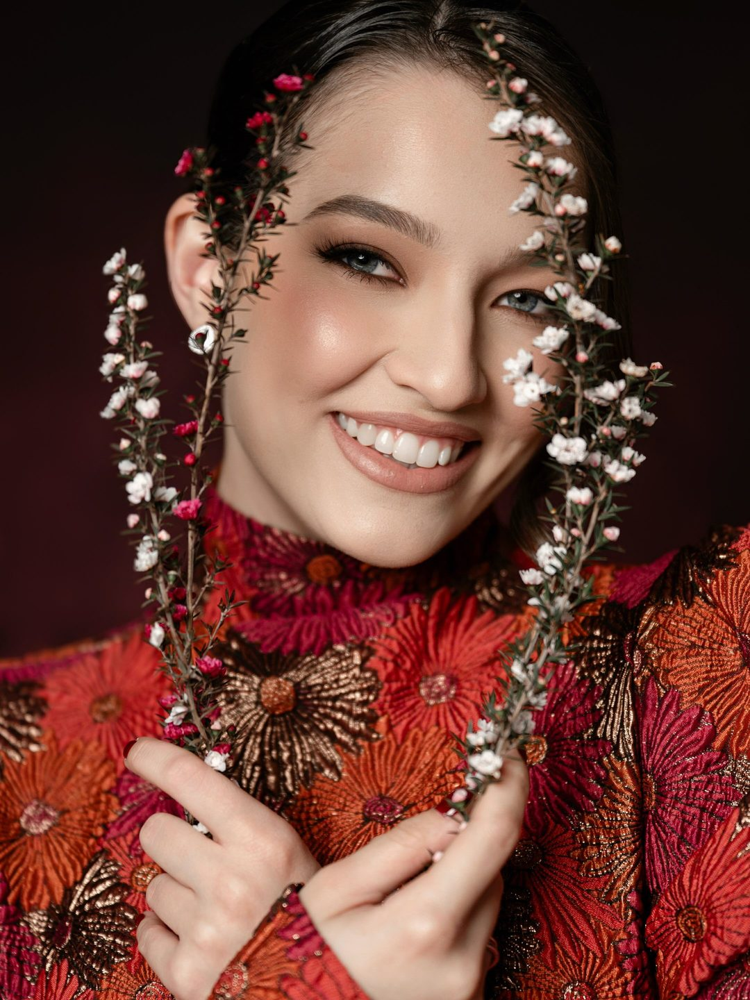
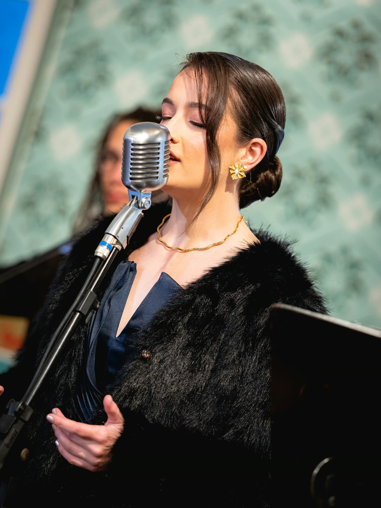
Quem canta
Uma experiência musical pensada para vocês.
Sou a Jamilli. Nasci em Prudentópolis, moro em Guarapuava e sou cantora desde que me conheço por gente. Atuo em casamentos há sete anos, tendo realizado centenas de eventos em cidades como Guarapuava, Prudentópolis, Cascavel, Ponta Grossa e Curitiba.
Meu trabalho começa muito antes da cerimônia: entendendo quem vocês são, o que viveram juntos e quais sentimentos querem levar para esse momento.
Para as cerimônias católicas, tenho experiência com os protocolos e particularidades musicais do rito, orientando sobre o que precisa ser observado junto à paróquia.
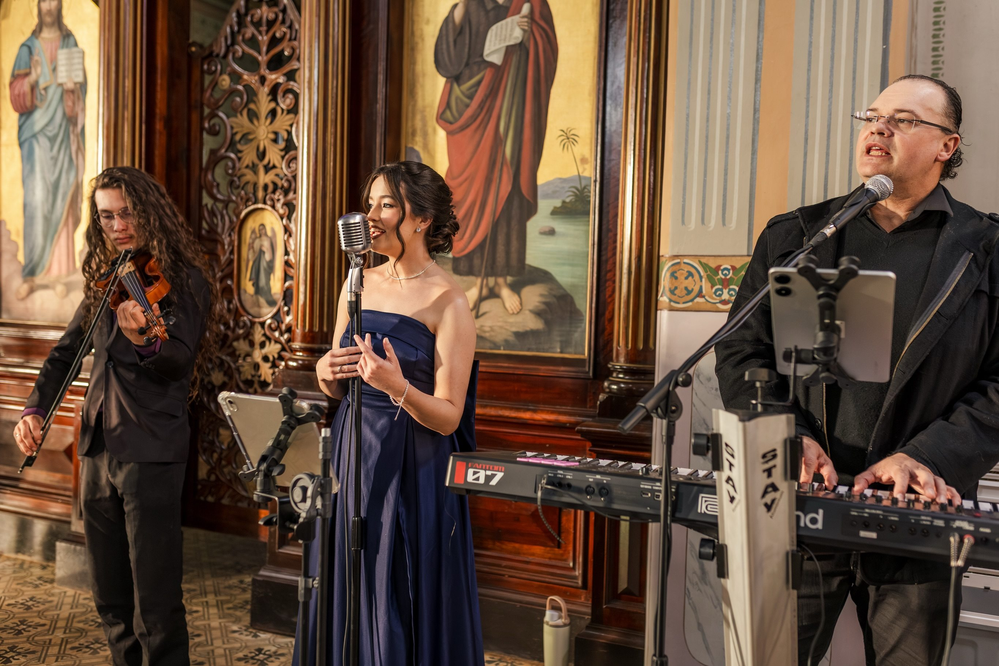
Assista com som
Gravações reais, sem estúdio, de casamentos em Guarapuava e região. Toque num vídeo e ouça com som — é assim que fica ao vivo.

Entrada da noiva · conjunto com cordas
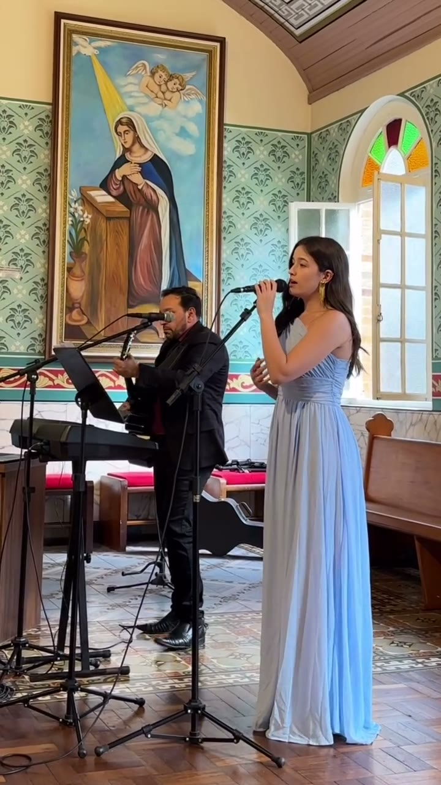
Cerimônia na igreja · voz e piano
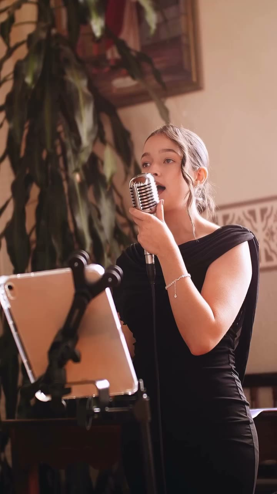
Bênção da noiva
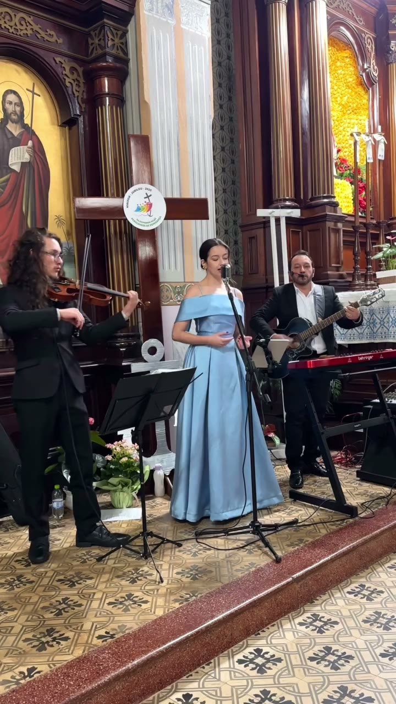
Roberta Campos · casamento de Fran & Saulo
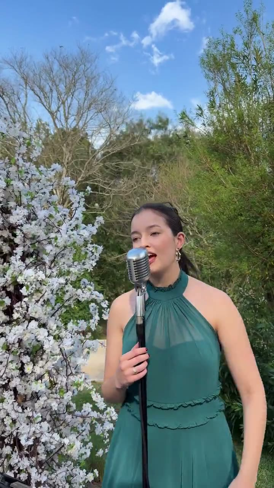
Ana Nóbrega
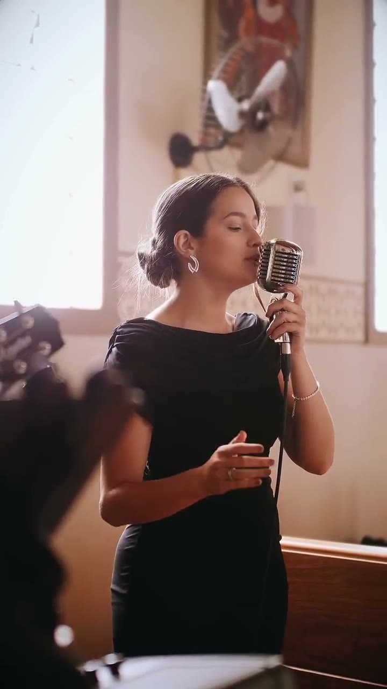
Marcelo Jeneci
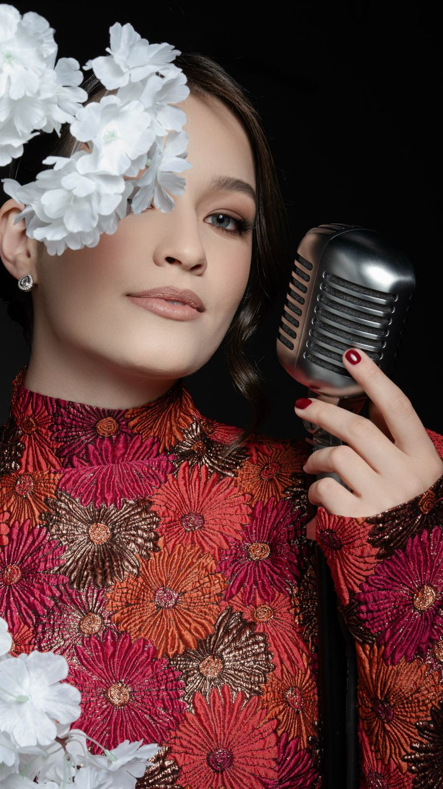
Édith Piaf · ensaio · Besha Garden
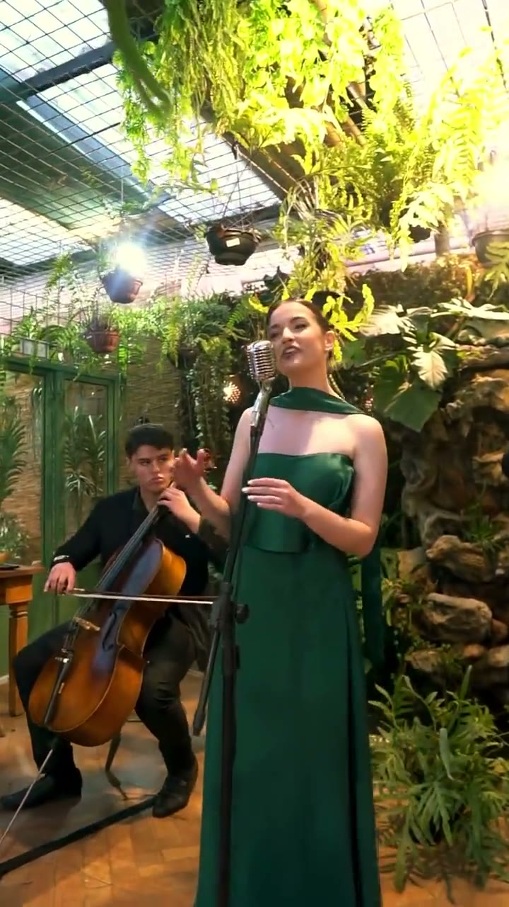
Bruno Mars & Lady Gaga · com cordas
Quem viveu
Me senti em um sonho.
O meu casamento ficou mais lindo e emocionante com a voz dela. Quem contratar não vai se arrepender.
Além da simpatia, me ajudou com as escolhas de músicas. A voz delicada e linda deixou a cerimônia ainda mais linda.
A cerimônia foi linda demais, emocionante e única. Deu para sentir algo tão forte, que ficará para sempre em minha memória. Vocês realizaram o nosso sonho.
Proposta musical
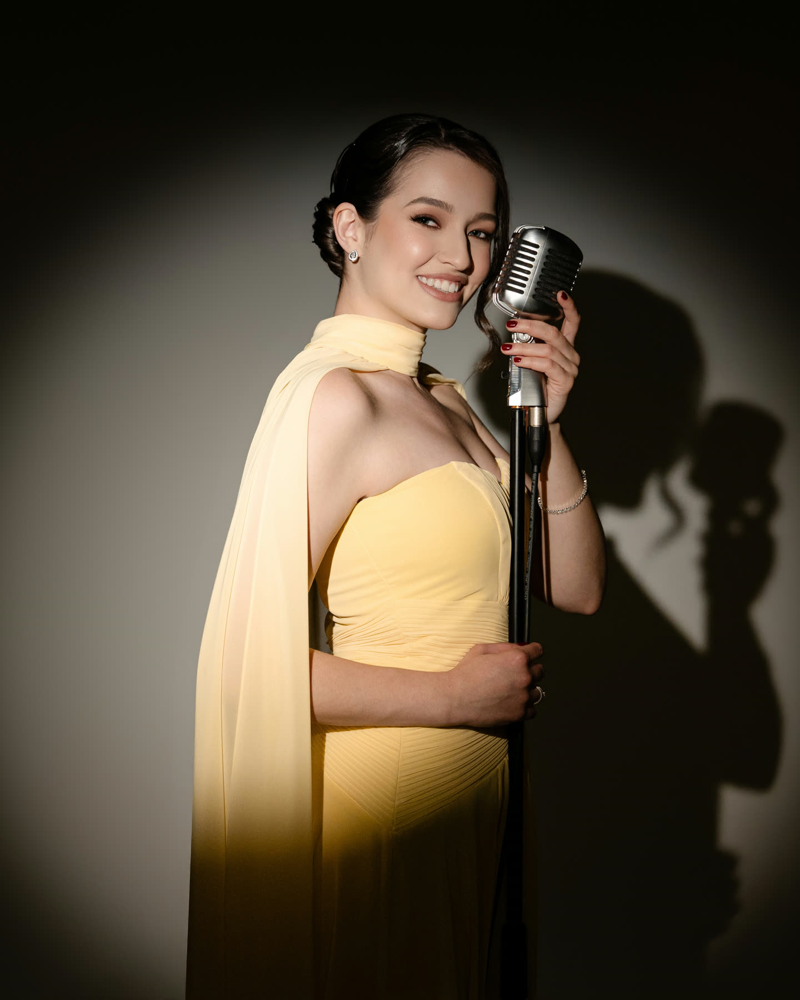
Música que acolhe
Jamilli Vaz